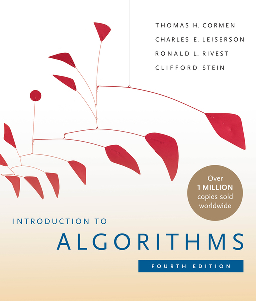
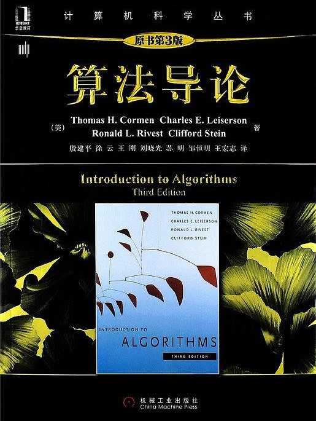
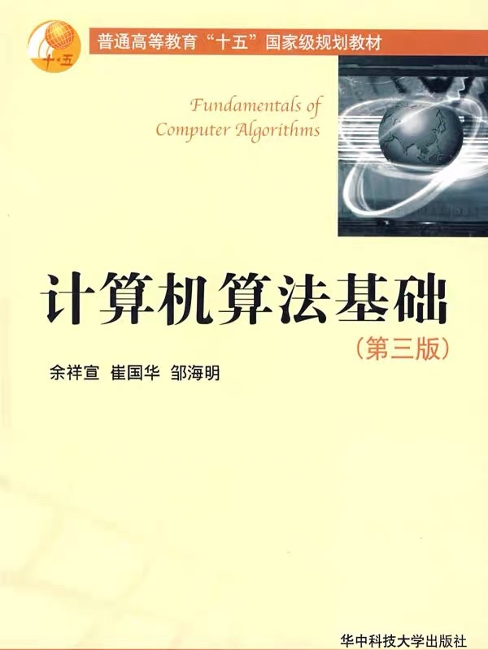

授课：张腾 tengzhang@hust.edu.cn
时间：第 9 ~ 16 周，周一 3 ~ 4 节课、周三 3 ~ 4 节，共 32 学时
地点：西十二楼 S401
主页：https://avanti1980.github.io/course-alg/
考核：闭卷考试 (70%)、作业 + 考勤 (30%)



Introduction to Algorithms 第三版共 1292 页，第四版共 1312 页
回答三个问题
是什么 what
为什么 why
怎么样 how
两河流域 古巴比伦 汉谟拉比王朝 (公元前1800年 — 公元前1600年)
泥板上的楔形文字
一个蓄水池
深度为 3.33，挖出土的体积为 27.78
长度比宽度多 0.83
应当取深度 3.33 的倒数，得 0.3
乘以体积 27.78，得 8.33
取 0.83 的一半，再取平方，得 0.17
加 8.33，得 8.51
取平方根得 2.92
将这个数字复制得到两个，其中一个加上 0.42，另一个减去 0.42
可以算出 3.33 是长度，2.5 是宽度
算法不是计算机才能做的事，计算机出现前，算法就已经存在很久了
算法的朴素本质：完成任务所需的明确步骤序列
大象装冰箱算法
上课算法
YBC 7289 号泥板：求 2 的平方根算法
对 2 的平方根提出一个猜测数
按如下方式重复生成新的猜测数：
2 除以当前猜测数
所得数字加上猜测数
除以 2 得到一个新的猜测数
当最新的两个猜测数几乎相等时，停止重复
该算法中已经出现了选择和迭代 (递归)
算法是我们设计的一组明确的步骤序列
程序设计是用计算机能理解的编程语言实现这些步骤的活动
计算机算法：运行在计算设备上，把输入转换成输出的一组计算步骤
已全面接管生活
“算法之父” —— 阿尔·花拉子米 (约 780 — 850 年)
9 世纪波斯数学家、天文学家、地理学家
花拉子米早年游学印度，约于公元 825 年写成两部划时代著作
The Compendious Book on Calculation by Completion and Balancing
花拉子米早年游学印度，约于公元 825 年写成两部划时代著作
On the Calculation with Hindu Numerals
词汇演化
花拉子米：来自花拉子模的人
1219 年，蒙古西征灭了花拉子模，但花拉子米的学术遗产已超越时空
《射雕英雄传》第三十七回 从天而降
原来蒙古大军分路进军，节节获胜，再西进数百里，即是花拉子模的名城撒麻尔罕。成吉思汗哨探获悉，此城是花拉子模的新都，结集重兵十余万守御，城精粮足……
成吉思汗自进军花拉子模以来，从无如此大败，当晚在帐中悲痛爱孙之亡，怒如雷霆。郭靖回帐翻阅《武穆遗书》，要想学一个攻城之法，但那撒麻尔罕的城防与中国大异，遗书所载的战法均无用处……
郭靖正欲说出辞婚之事，忽听得远处传来……，只道城中投降了的花拉子模军民突然起事，……。成吉思汗笑道：“没事，没事。这狗城不服天威，累得我损兵折将，又害死了我爱孙，须得大大洗屠一番。大家都去瞧瞧。”
回答三个问题
是什么 what
为什么 why
怎么样 how
两个无刻度水桶，总容量分别为 9 升和 6 升，如何量出 3 升的水？
两个无刻度水桶，总容量分别为 9 升和 6 升，如何量出 3 升的水？
算法：
将 9 升的桶装满水
向 6 升的桶倒水，直到满
9 升桶中剩下的即为 3 升
如果总容量分别为 7 升和 5 升，如何量出 1 升的水？
两个无刻度水桶，总容量分别为 7 升和 5 升，如何量出 1 升的水？
算法：
将 5 升的桶装满水，5/5、0/7
将 5 升的桶中的 5 升水全部倒入7升的桶中，0/5、5/7
将 5 升的桶装满水，5/5、5/7
向 7 升的桶倒水，直到满，此时 5 升的桶中还剩 3 升水，3/5、7/7
将 7 升的桶中的水倒掉，3/5、0/7
将 5 升的桶中的 3 升水倒入 7 升的桶中，0/5、3/7
将 5 升的桶装满水，5/5、3/7
向 7 升的桶倒水，直到满，此时 5 升的桶中还剩 1 升水，1/5、7/7
两个无刻度水桶，总容量分别为$a$升和$b$升
思路：装满对应$+a$或$+b$，倒掉对应$-a$或$-b$
能否通过若干次$\pm a$、$\pm b$得到$t$？即存在整数$x$、$y$使得$ax + by = t$？
前面的例子：$5 \cdot 3 - 7 \cdot 2 = 1$
由裴蜀定理，$t$必须是$a$、$b$最大公约数的倍数，若$t=1$，则$a$、$b$互素
原问题：是否存在整数$x$、$y$使得$ax + by = t$？
问题 1：求最大公约数 (greatest common divisor, gcd)
输入正整数$a$、$b$，输出$d = \gcd(a,b)$
令$a \gets a / d$、$b \gets b/ d$、$t \gets t / d$，此时问题不变但$\gcd(a,b) = 1$
问题 2：求整数$x$、$y$
输入互素的正整数$a$、$b$，输出整数$x$、$y$使得$ax+by=1$
$x \cdot t$、$y \cdot t$就是原问题的解
从$1$遍历到$\min(a,b)$，最大能同时整除$a$、$b$的数就是最大公约数
def gcd(a, b): for i in range(1, min(a, b) + 1): # 最大公约数不会大于两者中的较小者 if ((a % i == 0) and (b % i == 0)): # 同时整除即为公约数 gcd = i return gcd
对$x$从$1$遍历到$b$，检测$y$是否可同时为整数
def coef(a, b): for x in range(1, b): # 0 a 2a ... (b-1)a构成一个模b的剩余系 if (1 - a * x) % b == 0: # 若y也为整数 y = int((1 - a * x) / b) return x, y
记$a / b = q \cdots r$且$r < b$，于是$\gcd(a,b) \mid r$
$\gcd(a,b) = \gcd(b,r)$，不断令$(a,b) = (b,r)$直到$r = 0$即能整除
def Euclidean(a, b): # 辗转相除 while a % b: a, b = b, a % b return b def Euclidean_coef(a, b): # 辗转相除 if a % b == 0: # 递归停止条件：若b可以整除a return b, 1, 1 - int(a / b) else: d, x, y = Euclidean_coef(b, a % b) return d, y, x - int(a / b) * y
$\gcd(a,b) = \gcd(a-b,b)$，不断令$(a,b) = (a-b,b)$直到$a=b$
def gxjs(a, b): # 更相减损 while True: if a > b: a = a - b elif a < b: b = b - a else: return b def gxjs_coef(a, b): # 更相减损 if a == b: # 递归停止条件：a = b return b, 1, 0 elif a > b: d, x, y = gxjs_coef(a - b, b) return d, x, y - x else: d, x, y = gxjs_coef(a, b - a) return d, x - y, y
更相减损结合移位除法 — 古代中国智慧与现代计算机的结合
对$a$、$b$分奇偶性讨论
def gxjs2(a, b): # 改进的更相减损 if a == b: return a while True: if not (a & 1) and not (b & 1): # 均为偶 gcd(a,b) = 2 * gcd(a/2, b/2) return gxjs2(a >> 1, b >> 1) << 1 elif not (a & 1) and (b & 1): # a偶 b奇 gcd(a,b) = gcd(a/2, b) return gxjs2(a >> 1, b) elif (a & 1) and not (b & 1): # a奇 b偶 gcd(a,b) = gcd(a, b/2) return gxjs2(a, b >> 1) else: # 均为奇 更相减损 gcd(a,b) = gcd(a-b, b) if a > b: return gxjs2(a - b, b) else: return gxjs2(a, b - a)
迭代轮数约为$\log(\max(a, b))$，同辗转相除，但避免了取模运算
四种方法
| 方法 | 迭代轮数 | 每轮操作 |
|---|---|---|
| 暴力穷举法 | $\min(a, b)$ | $2$次取模运算 |
| 辗转相除法 | 约$\log(\max(a,b))$ | $1$次取模运算 |
| 更相减损术 | 最坏$\max(a, b)$ | 无取模运算 |
| 改进的更相减损术 | 约$\log(\max(a,b))$ | 无取模运算 |
输入：数组$a = \langle a_1, a_2, \ldots, a_n \rangle$
输出：$a$的元素的重排列$\langle a'_1, a'_2, \ldots, a'_n \rangle$且$a'_1 \le a'_2 \le \cdots \le a'_n$
借助排序这个基本问题，我们将学习：
我们依次学习五种经典排序算法：冒泡、选择、插入、归并、快速排序
核心思想：通过相邻元素的反复比较和交换，让较小的元素逐步“冒泡”到数组前端
def bubble_sort(a, n): for i in range(n - 1): for j in range(n - 1, i, -1): if a[j] < a[j - 1]: a[j], a[j - 1] = a[j - 1], a[j]
前两轮外层循环
| | 1 | 2 | 3 | 4 | 5 | 6 | | | 1 | 2 | 3 | 4 | 5 | 6 |
|---|---|---|---|---|---|---|---|---|---|---|---|---|---|---|
| (1) | 5 | 2 | 4 | 6 | 1 | 3 | | (6) | 1 | 5 | 2 | 4 | 3 | 6 |
| (2) | 5 | 2 | 4 | 1 | 6 | 3 | | (7) | 1 | 5 | 2 | 3 | 4 | 6 |
| (3) | 5 | 2 | 1 | 4 | 6 | 3 | | (8) | 1 | 5 | 2 | 3 | 4 | 6 |
| (4) | 5 | 1 | 2 | 4 | 6 | 3 | | (9) | 1 | 2 | 5 | 3 | 4 | 6 |
| (5) | 1 | 5 | 2 | 4 | 6 | 3 | | | | | | | | |
def bubble_sort(a, n): for i in range(n - 1): for j in range(n - 1, i, -1): if a[j] < a[j - 1]: a[j], a[j - 1] = a[j - 1], a[j]
如何证明算法的正确性？
循环不变式 (loop-invariant)：一个关于循环状态的命题，满足三条性质
内层循环：每次进入循环前，子数组$a[j, \ldots, n-1]$的第一个元素最小
外层循环：每次进入循环前，子数组$a[0, \ldots, i-1]$有序排列着整个数组$a[]$的最小的$i$个元素
def bubble_sort(a, n): for i in range(n - 1): for j in range(n - 1, i, -1): if a[j] < a[j - 1]: a[j], a[j - 1] = a[j - 1], a[j]
内层循环：每次进入循环前，子数组$a[j, \ldots, n-1]$的第一个元素最小
外层循环：每次进入循环前，子数组$a[0, \ldots, i-1]$有序排列着整个数组$a[]$的最小的$i$个元素
外层循环不变式证明依赖内层的终止情况，先证明内层
def bubble_sort(a, n): for i in range(n - 1): for j in range(n - 1, i, -1): if a[j] < a[j - 1]: a[j], a[j - 1] = a[j - 1], a[j]
内层循环：每次进入循环前，子数组$a[j, \ldots, n-1]$的第一个元素最小
外层循环：每次进入循环前，子数组$a[0, \ldots, i-1]$有序排列着整个数组$a[]$的最小的$i$个元素
| bubble_sort(a, n): | 时间 | 次数 |
|---|---|---|
| for i in range(n-1): | $c_1, c'_1$ | 对$i$赋值$1$次、自增$n-1$次 |
| $c''_1$ | $i$与$n-1$比较$n$次 | |
| for j in range(n-1, i, -1): | $c_2, c'_2$ | 对$j$赋值$n-1$次、自减$\frac{n^2-n}{2}$次 |
| $c''_2$ | $j$与$i$比较$\frac{n^2+n-2}{2}$次 | |
| if a[j] < a[j-1]: | $c_3$ | 比较$\frac{n^2-n}{2}$次 |
| a[j], a[j-1] = a[j-1], a[j] | $c_4$ | 交换$\sum_{i=0}^{n-2} t_i$次 |
\begin{align} T = c_1 & + c'_1 (n-1) + c''_1 n + c_2 (n-1) + c'_2 \frac{n^2-n}{2} + c''_2 \frac{n^2+n-2}{2} \\ & + c_3 \frac{n^2-n}{2} + c_4 \sum_{i=0}^{n-2} t_i = a n^2 + b n + c + c_4 \sum_{i=0}^{n-2} t_i \end{align}
$t_i$是外层循环第$i$轮中内层循环$a[j]$和$a[j-1]$交换的次数
\begin{align} a n^2 + b n + c & \le T \le a n^2 + b n + c + c_4 \sum_{i=0}^{n-2} (n-1-i) \\ & \Longrightarrow T \in \Theta(n^2), ~ 最坏情况下交换次数 \in \Theta(n^2) \end{align}
| 算法 | 最坏情况下运行时间 | 最好情况下运行时间 | 最坏情况下交换次数 |
|---|---|---|---|
| 冒泡排序 | $\Theta(n^2)$ | $\Theta(n^2)$ | $\Theta(n^2)$ |
最小元与第一个元素互换，次小元与第二个元素互换，……
def selection_sort(a, n): for i in range(n - 1): smallest = i for j in range(i + 1, n): if a[j] < a[smallest]: smallest = j a[i], a[smallest] = a[smallest], a[i]
| 算法 | 最坏情况下运行时间 | 最好情况下运行时间 | 最坏情况下交换次数 |
|---|---|---|---|
| 冒泡排序 | $\Theta(n^2)$ | $\Theta(n^2)$ | $\Theta(n^2)$ |
| 选择排序 | $\Theta(n^2)$ | $\Theta(n^2)$ | $\Theta(n)$ |
def selection_sort(a, n): for i in range(n - 1): smallest = i for j in range(i + 1, n): if a[j] < a[smallest]: smallest = j a[i], a[smallest] = a[smallest], a[i]
内层循环：每次进入循环前，$a[smallest]$是子数组$a[i, \ldots, j-1]$的最小元素
外层循环：每次进入循环前，子数组$a[0, \ldots, i-1]$有序排列着整个数组$a[]$的最小的$i$个元素，与冒泡排序相同
内层循环：
def selection_sort(a, n): for i in range(n - 1): smallest = i for j in range(i + 1, n): if a[j] < a[smallest]: smallest = j a[i], a[smallest] = a[smallest], a[i]
内层循环：每次进入循环前，$a[smallest]$是子数组$a[i, \ldots, j-1]$的最小元素
外层循环：每次进入循环前，子数组$a[0, \ldots, i-1]$有序排列着整个数组$a[]$的最小的$i$个元素，与冒泡排序相同
外层循环保持：若子数组$a[0, \ldots, i-1]$有序排列着整个数组$a[]$的最小的$i$个元素，又$a[smallest]$是子数组$a[i, \ldots, n-1]$的最小元素，经过第 7 行的交换，$a[i]$是$a[i, \ldots, n-1]$的最小元素，因此子数组$a[0, \ldots, i]$有序排列着整个数组$a[]$的最小的$i+1$个元素
在前半部分构建有序子数组，将后半部分的未排序元素插入其中
def insertion_sort(a, n): for i in range(1, n): key = a[i] j = i - 1 while j >= 0 and key < a[j]: a[j + 1] = a[j] j -= 1 a[j + 1] = key
| | 1 | 2 | 3 | 4 | 5 | 6 | | | 1 | 2 | 3 | 4 | 5 | 6 |
|---|---|---|---|---|---|---|---|---|---|---|---|---|---|---|
| (1) | 5 | 2 | 4 | 6 | 1 | 3 | | (2) | 2 | 5 | 4 | 6 | 1 | 3 |
| | | | | | | | | | | | | | | |
| (3) | 2 | 4 | 5 | 6 | 1 | 3 | | (4) | 2 | 4 | 5 | 6 | 1 | 3 |
| | | | | | | | | | | | | | | |
| (5) | 1 | 2 | 4 | 5 | 6 | 3 | | (6) | 1 | 2 | 3 | 4 | 5 | 6 |
def insertion_sort(a, n): for i in range(1, n): key = a[i] j = i - 1 while j >= 0 and key < a[j]: a[j + 1] = a[j] j -= 1 a[j + 1] = key
内层循环：每次进入循环前，$key \le a[j+1]$
外层循环：每次进入循环前，子数组$a[0, \ldots, i-1]$已经排好序
| insertion_sort(a, n): | 时间 | 次数 |
|---|---|---|
| for i in range(1, n): | $c_1, c'_1$ | 对$i$赋值$1$次、自增$n-1$次 |
| $c''_1$ | $i$与$n$比较$n$次 | |
| key = a[i] | $c_2$ | 对$key$赋值$n-1$次 |
| j = i - 1 | $c_3$ | 对$j$赋值$n-1$次 |
| while j >= 0 and key < a[j]: | $c_4,c'_4$ | 比较$2 \sum_{i=1}^{n-1} t_i + \{1,2\}$次 |
| a[j+1] = a[j] | $c_5$ | 赋值$\sum_{i=1}^{n-1} t_i$次 |
| j -= 1 | $c_6$ | 对$j$赋值$\sum_{i=1}^{n-1} t_i$次 |
| a[j+1] = key | $c_7$ | 赋值$n-1$次 |
\begin{align} T = b n + c + d \sum_{i=1}^{n-1} t_i \end{align}
$t_i$是外层 for 循环第$i$轮中内层 while 循环的执行次数
\begin{align} b n + c \le b n + c + d \sum_{i=1}^{n-1} t_i \le b n + c + d \cdot \frac{n^2-n}{2} \end{align}
| 算法 | 最坏情况下运行时间 | 最好情况下运行时间 | 最坏情况下交换次数 |
|---|---|---|---|
| 冒泡排序 | $\Theta(n^2)$ | $\Theta(n^2)$ | $\Theta(n^2)$ |
| 选择排序 | $\Theta(n^2)$ | $\Theta(n^2)$ | $\Theta(n)$ |
| 插入排序 | $\Theta(n^2)$ | $\Theta(n)$ | $\Theta(n^2)$ |
分治：将原问题分成若干同类型、规模更小的子问题递归求解
def merge_sort(a, low, high): if low < high: mid = int((low + high) / 2) # 中间点 merge_sort(a, low, mid) merge_sort(a, mid + 1, high) merge(a, low, mid, high)
def merge_sort(a, low, high): if low < high: mid = int((low + high) / 2) # 中间点 merge_sort(a, low, mid) merge_sort(a, mid + 1, high) merge(a, low, mid, high)
合：取两个子数组的最小元素做比较，并将小者取出
def merge(a, low, mid, high): # 子数组的长度 n1, n2 = mid - low + 1, high - mid # 创建临时数组 L, R = [0] * n1, [0] * n2 # 拷贝数据到临时数组L for i in range(n1): L[i] = a[low + i] # 拷贝数据到临时数组R for j in range(n2): R[j] = a[mid + 1 + j] i, j, k = 0, 0, low # 归并L和R到a[low,...,high] while i < n1 and j < n2: if L[i] <= R[j]: a[k] = L[i] i += 1 else: a[k] = R[j] j += 1 k += 1 # 拷贝L的剩余元素 while i < n1: a[k] = L[i] i += 1 k += 1 # 拷贝R的剩余元素 while j < n2: a[k] = R[j] j += 1 k += 1
设将两个长度为$n/2$的有序数组合并的时间为$f(n)$
设长度为$n$的数组的排序时间为$T(n)$，则有
\begin{align} T(n) = \begin{cases} 1, & n = 1 \\ 2 \cdot T (n/2) + f(n), & n > 1 \end{cases} \overset{主方法}{\Longrightarrow} T(n) = \Theta(n \lg n) \end{align}
| 算法 | 最坏情况下运行时间 | 最好情况下运行时间 | 最坏情况下交换次数 |
|---|---|---|---|
| 冒泡排序 | $\Theta(n^2)$ | $\Theta(n^2)$ | $\Theta(n^2)$ |
| 选择排序 | $\Theta(n^2)$ | $\Theta(n^2)$ | $\Theta(n)$ |
| 插入排序 | $\Theta(n^2)$ | $\Theta(n)$ | $\Theta(n^2)$ |
| 归并排序 | $\Theta(n \lg n)$ | $\Theta(n \lg n)$ | $\Theta(n \lg n)$ |
分治：将原问题分成若干同类型、规模更小的子问题递归求解
def quick_sort(a, low, high): if low < high: m = partition(a, low, high) quick_sort(a, low, m - 1) quick_sort(a, m + 1, high)
def quick_sort(a, low, high): if low < high: m = partition(a, low, high) quick_sort(a, low, m - 1) quick_sort(a, m + 1, high)
def partition(a, low, high): # 最右元素作为主元 pivot = a[high] # 小于主元的元素的存放位置 初始为最左 i = low # low -> high-1 遍历其它元素 for j in range(low, high): if a[j] <= pivot: # 小于主元的元素放到主元左边 a[i], a[j] = a[j], a[i] i += 1 # 存放位置右移一位 # 所有小于主元的元素已位于主元左边 # 当前的i就是主元应该放的位置 # 当前的a[i]大于主元 a[i], a[high] = a[high], a[i] return i
设长度为$n$的数组的排序时间为$T(n)$，则有递推关系
\begin{align} T(n) = \begin{cases} 1, & n = 1 \\ T(n) = T(k) + T(n-1-k) + \Theta(n), & n > 1 \end{cases} \end{align}
如何改进？
| 算法 | 最坏情况下运行时间 | 最好情况下运行时间 | 最坏情况下交换次数 |
|---|---|---|---|
| 冒泡排序 | $\Theta(n^2)$ | $\Theta(n^2)$ | $\Theta(n^2)$ |
| 选择排序 | $\Theta(n^2)$ | $\Theta(n^2)$ | $\Theta(n)$ |
| 插入排序 | $\Theta(n^2)$ | $\Theta(n)$ | $\Theta(n^2)$ |
| 归并排序 | $\Theta(n \lg n)$ | $\Theta(n \lg n)$ | $\Theta(n \lg n)$ |
| 快速排序 | $\Theta(n^2)$ | $\Theta(n \lg n)$ | $\Theta(n^2)$ |
除最坏/好情况分析，还有平均情况分析、“基准实例”测试
我们通常更关心算法在最坏情况下的运行时间
$\Theta(n \lg n)$和$\Theta(n^2)$的差别有多大？
设对长度一千万的数组进行排序，$n = 10^7$
| CPU | 算法 | 时间复杂度 | |
|---|---|---|---|
| 计算机 A | $10^{10}$条指令/秒 | 插入排序 | $2 \cdot n^2$ |
| 计算机 B | $10^7$条指令/秒 | 归并排序 | $50 \cdot n \lg n$ |
\begin{align} & \frac{2 \cdot (10^7)^2 \class{base01}{\text{指令}}}{10^{10} \class{base01}{\text{指令/秒}}} = 20000 \class{base01}{\text{秒}} > 5.5 \class{base01}{\text{小时}} \\ & \frac{50 \cdot 10^7 \lg 10^7 \class{base01}{\text{指令}}}{10^7 \class{base01}{\text{指令/秒}}} \approx 1163 \class{base01}{\text{秒}} < 20 \class{base01}{\text{分钟}} \end{align}
像对待计算机硬件一样把算法看成是一种技术
如果计算机计算存储资源无限，那么我们还需研究算法吗？
回答三个问题
是什么 what
为什么 why
怎么样 how
课外阅读：算法导论 4th 前两章
习题：1.2-2、1.2-3、2.1-3、2.1-4